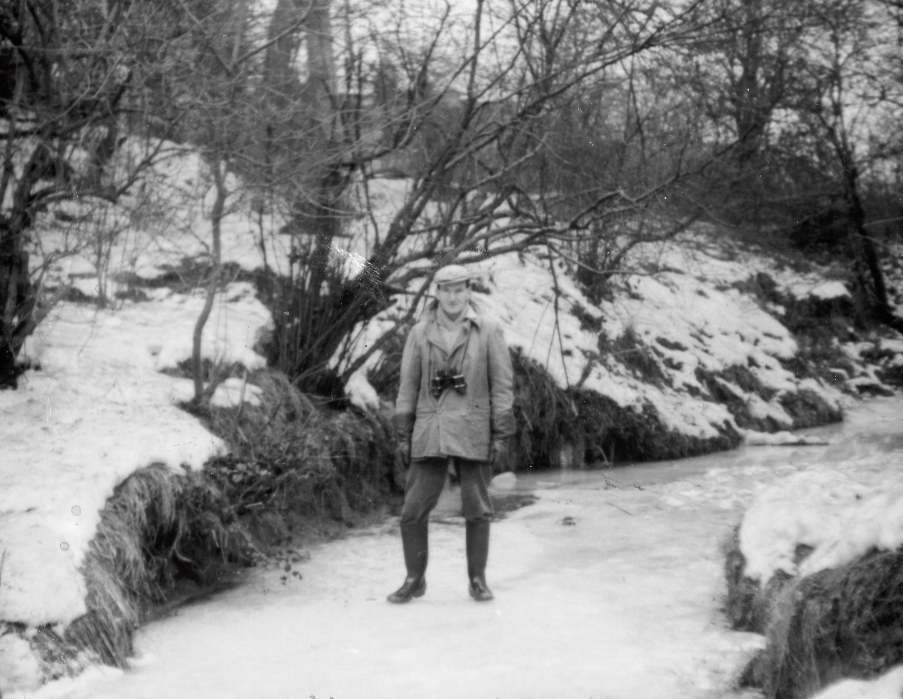
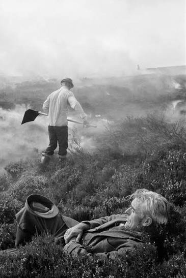
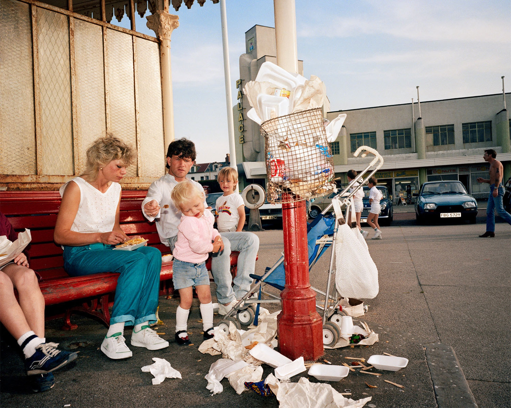
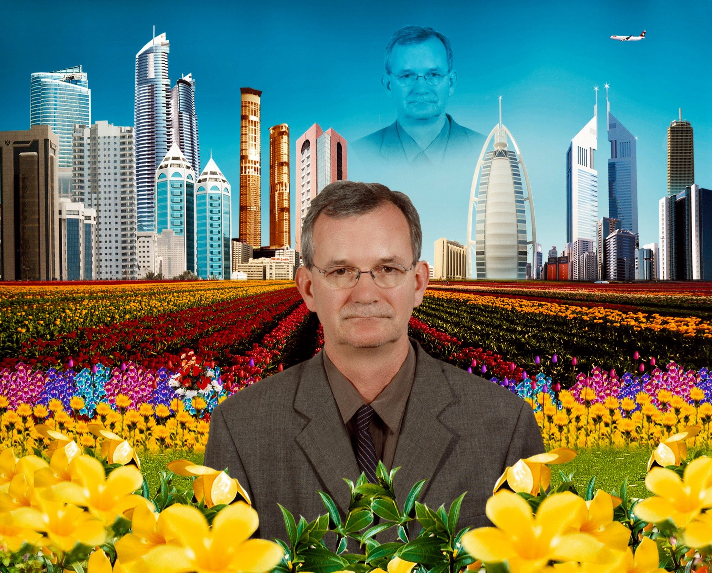

마틴 파, 세계는 아버지의 바지다

1.
눈 덮인 둔덕 사이의 얼어붙은 개울 위에 한 사내가 엉거주춤하게 서 있다. 머리에는 플랫 캡을 썼고, 개버딘이나 두터운 면으로 만들었을 필드 재킷을 걸쳤다. 목에는 왠지 군수품처럼 묵직해 보이는 쌍안경을 걸었으며, 손에는 두툼한 장갑을 끼고 주름진 바지는 무릎까지 올라온 웰링턴 부츠에 집어넣어 입었다.
이것은 1960년대 영국 서리(Surrey) 지방에 살던 소년이 자신의 아버지를 찍은 사진이다. 고작 이 정도의 기초 정보만으로도 우리는 이 사진에서 적지 않은 것들을 추정할 수 있다. 예를 들어 사람이 올라갈 수 있을 정도로 남부 잉글랜드의 개울이 얼어붙는 것은 흔한 일이 아니다. 그러므로 이 사진이 찍힌 것은 1962~63년 사이의 대혹한(the Great Freeze) 시기였을 가능성이 높다. 그해 영국에는 1740년 이후 최악의 한파가 있었다. 스칸디나비아에 주저앉은 고기압이 시베리아의 동풍을 무려 10주 동안이나 끌어들이면서, 템스 강뿐 아니라 심지어 항구의 바닷물까지 얼기 시작했다. 하적장의 석탄이 바위처럼 얼어붙어 발전소 가동이 멈추는가 하면, 눈과 추위로 고립된 마을에는 헬기가 말먹이용 건초와 사람을 위한 보급품 상자를 떨어뜨려야 했다. 영국인들은 수도관이 터져나가고 가스가 끊긴 주택 안에서 불을 피워 깡통 수프를 데우고 차를 마시며 각자의 추위를 견뎠다.
쌍안경을 목에 건 저 사내는 조류 탐조가일 것이다. 종전 이후 영국에는 옛 군수 물자였던 쌍안경을 취미에 활용하는 이들이 많았다. 경마꾼이나 항공기 관찰자, 심지어 저속한 만화엽서에 자주 등장하는 해변의 관음꾼들도 쌍안경을 구해서 목에 걸고 돌아다니곤 했다. 하지만 저런 추운 날씨에 낡고 실용적인 옷차림으로 무장하고 얼어붙은 개울 위를 맴도는 이들이 탐조가가 아닐 수 없다. 원래 겨울은 그들이 가장 좋아하는 계절이다. 관목의 나뭇잎이 떨어져 작은 새를 관찰하기 좋고, 먹이가 부족하기 때문에 새들이 사람 눈에 잘 띄는 먹이터와 물가로 나온다. 더 추운 지역에서 철새들이 날아오거나 희귀한 새가 갑자기 북해의 폭풍에 밀려 흘러들어올 때면, 쌍안경을 목에 걸고 보온병을 든 영국 남자들이 그들을 구경하러 남쪽 해안에 몰려오곤 했다.
하지만 지나치게 추운 겨울이었다. 혹한을 피해 대륙에서 날아온 새들은 영국에 고립되어 결국 대규모로 폐사했다. 왜가리와 물떼새, 종다리들은 얼어붙은 강가에서 굶어 죽었다. 물총새는 거의 절멸 수준으로, 굴뚝새의 개체수는 반토막으로 떨어졌다. 서리 주의 중요한 텃새인 다트퍼드휘파람새는 그해 겨울을 지나는 동안 열 쌍 안팎으로 줄어들고 말았다.
새들이 죽어가는 계절의 탐조가는 어떤 모습을 하고 있을까? 소년이 찍은 사진은 그 전형적인, 어쩌면 도감에 가까운 모습을 보여준다. 그들은 이런 참혹한 겨울에도 기꺼이 쌍안경을 목에 걸고 얼어붙은 개울 위를 걸어다닌다. 아웃도어 산업이 변변치 않던 시절이라 낡은 실용복과 군수품이 섞여 있는 부실한 차림새를 한 채로. 혹한기의 탐조가들 중 어떤 사내는 아들의 첫 사진을 위해 두 발을 벌려 얼음을 딛고 팔을 내린 채 엉거주춤하게 포즈를 취한다. 그는 딱히 가부장 특유의 자신감과 유머를 드러내지 않고, 아들은 아버지의 표정을 찍기 위해 몇 발짝 더 걸어가거나 풍경을 담기 위해 뒤로 물러나지 않는다. 이 어정쩡한 거리감, 부자연스러운 포즈, 얼굴이 아니라 쌍안경에 맞은 무른 초점, 딱히 아름다울 것도 황폐할 것도 없는 애매한 배경, 왠지 어색해서 자꾸만 시선이 가는 바지의 주름 등이야말로, 훗날 거물 사진가가 될 마틴 파의 시각적 문법을 예고하는 것처럼 느껴진다.
2.
2차대전 종전 이후의 영국인들은 자기 나라의 위상을 가늠하는 데 혼란스러워하고 있었다. 영국은 여전히 히틀러를 막아낸 승전국이자 제국인가? 혹은 옛 명예와 영광을 남긴 채 쇠퇴하는 섬나라에 불과한가? 두 차례의 세계대전은 미국의 압도적인 힘을 추축국뿐 아니라 연합국에도 깊게 각인시켰다. 태평양과 대서양을 건너 끝없이 도착하는 미국의 군대와 물자, 그리고 전후 복구의 기간 동안 미국이 유럽에 쏟아부은 천문학적인 금액의 원조와 지원은 이미 세계의 패권이 어디에 있는지를 명확히 보여주는 증거였다.
하지만 프랑스가 불과 6주 만에 무너졌던 1940년에 만약 처칠과 영국인들이 필사의 항전을 이어가지 않았다면 전쟁은 맥없는 패배로 끝났을 것이다. 독일 국방군의 상륙을 막아내고 대공습을 견뎌냈으며, 미국과 함께 노르망디의 역습까지 성공시킨 영국의 싸움은 분명 어느 정도 제국이라는 이름에 값할 만했다. 보수당 출신 총리였던 해럴드 맥밀런은 1957년 베드퍼드의 보수당 집회 연설에서 영국이 “이렇게 잘살아본 적이 없다”고 말했고, 이것은 심지어 통계적 사실이기도 했다. 종전 이후 TV와 세탁기와 자가용이 급격하게 보급되었고, 영국 노동계급의 생활 수준은 실질 임금의 상승과 함께 역사상 가장 빠르게 오르는 중이었다. 하지만 서독의 절반에도 미치지 못하고 프랑스에도 한참 뒤지는 경제성장률과, 옥스브리지와 퍼블릭 스쿨로 상징되는 엘리트 중심의 사회는 급격히 역동성을 잃어가고 있었다.
이런 상황에서 1963년의 혹독한 추위는 당시 영국의 사회 시스템과 주거 인프라가 지닌 민낯을 여실히 보여주었다. 수천 명의 사람들이 냉해로 사망했고, 남은 이들도 자주 죽음을 떠올렸다. 런던 프림로즈힐의 피츠로이 로드 23번지, 파이프가 얼어 터지고 정전이 반복되던 집에서는 탈진한 실비아 플라스가 가스 오븐에 머리를 넣어 자살했다. 독감을 앓던 아이들의 방에 빵과 우유를 가져다 두고, 부엌 문틈을 꼼꼼하게 테이프와 수건으로 막은 뒤였다. 같은 해 여름, 조지 오웰이 격찬했던 전설적인 저널리스트 아서 쾨슬러는 <엔카운터>지의 객원 편집을 맡아 “어느 국가의 자살?(Suicide of a Nation?)”이라는 주제 아래 영국을 집요하게 파헤쳤다. 직접 쓴 칼럼에서 그는 영국이 제국의 긍지를 상징하는 사자와 겁에 질려 모래에 머리를 박은 타조의 결합체처럼 자존심과 불안감이 뒤섞인 묘한 심리 상태에 빠져 있다고 썼다.
물론 그것이 영국만의 상황은 아니다. 한 개인은 자신이 몸담고 살아가는 사회가 번영하고 있는지, 쇠퇴하고 있는지를 정확히 이해할 수 있을까? 우리는 지금의 한국이 어디로, 어떻게 가고 있는지를 가늠하고 있는가? 이는 오래된 인식론의 문제를 건드린다. 한 인간이 불완전한 감각을 통해 파악하기에 세계는 너무나 크고 복잡하며 변화무쌍하다. 그것은 대체로 광막한 무의미의 평야처럼 보이면서도, 가끔은 뱃속을 뒤집어서 속내를 보여주는 늙은 거인처럼 군다.
그러므로 매체의 특성상 끊임없이 외부 세계를 상대해야 했던 사진가들의 언어가 같은 시대 미술가들의 그것에 비해 훨씬 신학적인 냄새를 풍기는 것은 다소 민망하지만 이해하지 못할 일은 아니다. 예를 들어 20세기 스냅 사진 미학을 함축한다고 여겨지는 앙리 카르티에브레송의 ‘결정적 순간’은 원래 17세기의 레츠 추기경(Cardinal de Retz)이 쓴 문장의 일부다. 브레송은 “이 세계에 결정적 순간이 없는 것은 아무것도 없다(Il n’y a rien dans ce monde qui n’ait un moment décisif)”는 추기경의 말을 책의 제사(題詞)로 걸었고, 사이먼 앤드 슈스터의 편집자가 그 문장에서 두 단어를 뽑아 영어판 제목으로 삼았다.
19세기의 실험실에서 광학과 화학의 결합으로 태어난 어리고 천박한 매체와, 17세기를 관통한 명문장가이자 정치적 책사(策士)였던 추기경의 문장은 과연 어울리는 것일까? 어쨌거나 브레송의 사진론은 끝없는 인정 투쟁을 벌이던 20세기 초반의 사진에게 주어진 강력한 목표이자 교리였다. 거칠게 요약하자면 이렇다. 세계는 혼돈으로 가득해 보이지만 일종의 비의(秘義)가 숨겨져 있으며, 사진가의 임무는 그것이 드러나는 ‘결정적 순간’을 자신의 카메라로 포착하는 것이다. 세계의 이면에 숨겨진 질서는 순간적인 프레밍에 담긴 정교한 기하학적 형태로 구현된다. 사진가는 자신의 관찰 행위로 인해 그 질서가 교란되지 않도록 주의해야 하므로, 작은 라이카 카메라를 쓰고 플래시는 금지하는 것이 좋다.
하지만 탐조가의 아들이 그 말을 그리 진지하게 받아들였던 것 같지는 않다. 브레송의 사진론은 이를테면 몸을 숨기고 은밀하게 접근해서 한 방으로 승부를 보는 사냥꾼의 기술을 닮았다.(실제로 상류 계층이던 브레송은 사냥에 일가견이 있었고, 활쏘기에도 관심이 많았다) 하지만 영국 탐조의 전통이 사냥 행위로부터 분리된 것은 이미 19세기 말의 일이었다. 희귀조를 쏘아서 박제를 만들거나, 찌르레기의 군무가 순간적으로 만들어내는 기하학적 아름다움을 관찰하기 위해 탐조가들이 겨울의 얼어붙은 개울 위를 걷는 것은 아니다.
만년의 마틴 파는 아버지와의 주말 탐조를 즐겨 이야기하곤 했다. 아버지 도널드가 아들을 매주 토요일마다 데리고 갔던 곳은 아름다운 숲이 아니라 인근의 허셤(Hersham) 하수처리장이었다. 하수처리장의 오폐수에는 유기물이 많아 잘 얼지 않고 벌레가 꼬이기 때문이었을 것이다. 도널드는 벌레를 먹기 위해 날아온 새를 잡는 그물을 설치하고, 걸린 새를 다치지 않게 꺼낸다. 새의 무게를 달거나 날개 길이를 재고, 장부에 적고, 알루미늄 고리를 다리에 끼워 다시 날려보낸다.1) 어린 마틴은 그 모습을 구경하다가 지루해지면 지나가는 기관차를 센다. 해가 저물면 주변에 가득한 똥 위에서 자라난 푸른 토마토를 따 집에 돌아가서, 엄마가 그 토마토로 만들어준 처트니를 함께 먹는다.
이것이 영국 탐조가의 평범한 주말 오후다. 매주 반복되는 풍경의 외피를 카메라로 절개한다면 이 하루에 숨겨진 비의를 발견할 수 있을까? 쉽지 않을 것이다. 가장 큰 문제는 세계가 그들에게 보내주는 새들이 모두 똑같이 생겼다는 데 있다. 최고의 탐조가라고 해도 박새의 얼굴을 보고 그것이 지난 주에 만났던 새인지 아닌지를 알 방법은 없다. 그렇다면 어떤 새도 다른 새보다 더 ‘결정적’이지 않을 때 탐조가는 무엇을 해야 할까? 수집과 색인이다. 이것은 매일매일 많은 새를 잡아서 다리에 알루미늄 고리를 끼우고 기록한 후 날려보내는 일이다. 백 마리까지는 지루함이지만, 천 마리를 넘는다면 그것은 일종의 조사연구가 될 수도 있다. 1912년에 아마추어 탐조가들이 영국 제비가 남아프리카 해안까지 날아간다는 사실을 밝혀냈듯이.
마틴 파는 마치 탐조를 하듯이 사진을 찍었다. 똑같은 소시지, 똑같은 계란 프라이, 똑같은 해변, 똑같은 수영복, 그리고 똑같은 자세로 앉거나 누워 있는 사람들을 똑같은 방식으로 그렇게. 이것은 스타일의 문제라기보다는 세계관의 문제다. 세계가 두 겹으로 이루어져 있다고 믿는 이들은 그것이 이면의 본질을 드러내는 순간을 찾아 헤맨다. 하지만 세계는 한 겹이며 존재하는 것이 오직 표면이자 개별자일 뿐이라고 믿는 유명론자들은 그저 다음 번 소시지를 향해 셔터를 누른다. 이를테면 이것은 어떤 신비주의도 없는 오컴의 윌리엄과 로스켈리누스의 세계이자, 기록과 수집을 위해 악취가 풍기는 하수 처리장으로 기꺼이 걸어가는 탐조가의 취미 생활이다.
아마 브레송과 그의 후예들은 마틴 파를 결국 이해할 수 없었을 것이다. 훗날 86세의 브레송은 마틴 파의 개인전 <작은 세계Small World>이 열리던 전시장에서 그에게 말했다. “당신이 하는 일을 존중하지만, 당신은 완전히 다른 행성에서 온 사람 같소” 화가 난 브레송을 보고 말문이 막혔던 마틴 파는 나중에 이렇게 답했다고 한다. “무슨 말씀이신지는 알겠습니다. 하지만 왜 메신저를 쏘십니까?” 얼마 후 브레송은 마틴 파에게 팩스를 보냈다. “우리는 서로 다른 두 태양계에 속해 있소” 아마도 늙은 브레송은 자신과 파가 행성의 거리보다 더 멀리 떨어져 있다고 생각했던 듯하다. 피와 살을 가진 인간이 이보다 더 먼 거리감을 표현하는 것이 과연 가능할까.
3.

처음부터 마틴 파가 밝은 컬러와 번들번들한 질감의 사진을 찍었던 것은 아니다. 대학 졸업 이후의 본격적인 첫 작업인 <비국교인들The Non-Conformists>은2) 요크셔 주 헵든 브리지의 감리교와 침례교 예배당 공동체를 5년 동안 촬영한 것이었다. 줄지어 함께 식사를 하거나 화려한 모자를 쓰고 차를 마시는 이들의 사진을 찍을 때는 마틴 파 특유의 유머가 삐져나오지만, 기본적으로 이 작업은 사라지는 것을 애도하는 토니 레이존스와 크리스 킬립의 전통적인 영국 흑백 다큐멘터리 사진의 계보에 속한다.
이 연작은 마틴 파의 작업 세계에서 가장 이례적이다. 자신에게 사진과 공동체의 감각을 가르쳐 준 할아버지 조지 파가 살던 요크셔, 그리고 자신의 집안이 속한 감리교의 전통에 대한 묵념을 마친 마틴 파는 <궂은 날Bad Weather>와 <맑은 날A Fair Day>등 몇 개의 흑백 사진 연작을 지나 꽤 간단히 컬러로 옮겨간다. 한 인터뷰에서 그는 아내 수지가 리버풀에 일자리를 얻어서 근처에 집을 샀고, 그러다 뉴브라이턴을 발견해서 그곳의 ‘쓰레기와 에너지’에 끌렸다고 말한다. 대단한 미학적 선언이 아니라 이사를 가는 바람에 새로운 작업을 시작하게 되었다는 설명은 좀 허무하지만, 그래서 지극히 그다운 것이기도 하다. 어쨌거나 윌리엄 이글스턴과 스테판 쇼어, 조엘 마이어로위츠로 대표되는 미국 뉴 컬러의 영향과, 무엇보다도 과포화된 색채 감각으로 악명이 높던 상업사진가 존 힌디의 관광 엽서를 좋아하고 수집했던 마틴 파에게 있어 컬러 사진은 아주 잘 맞았다.
생전의 마틴 파는 자신을 화려한 색채에 끌리는 갈가마귀(jackdaw)에 비유하곤 했다. 끊임없이 늘어놓는 탐조 이야기에 질린 평전 작가가 집필을 포기했을 정도의 해박함과 열정을 감안했을 때, 마틴 파가 아무 새나 대충 골랐을 것 같지는 않다.(일반적인 영국인들은 반짝이는 것을 모으는 새라면 까치(magpie)를 떠올린다) 갈가마귀는 몸집도 까치보다 작은 데다, 무언가를 훔쳤다가 곤욕을 치르는 이야기가 많은 조금 어수룩한 새다. 욕심은 많지만 딱히 미워할 수 없고 그럴 필요도 없는 무해한 존재다.
하지만 갈가마귀와는 달리 마틴 파는 훨씬 더 거친 분노에 휘말리곤 했다. 그 첫 폭발은 1986년 런던 서펜타인 갤러리에서 열렸던 <최후의 휴양지The Last Resort> 전시였다. 뉴브라이턴에서 휴가를 즐기는 노동 계급의 사람들을 찍은 이 사진 연작에 대한 비평가들의 반응은 최악이었다. 데이비드 리는 <아트 리뷰Arts Review>에서 마틴 파가 찍은 노동 계급이 “뚱뚱하고, 단순하고, 스타일 없고, 지루하게 순응적이며, 어떤 개별적 정체성도 주장하지 못하는” 모습으로 그려졌다며 격렬하게 비판했다. “다큐멘터리 사진가들이 늘 관대하게 다뤄온 노동 계급이 쉬운 표적(sitting duck)으로 묘사”되었다며 그는 분노를 참지 못했다. 로버트 모리스는 <브리티쉬 저널 오브 포토그래피>에 “사람들이 감자칩 포장지에 무릎까지 파묻힌 채 눕고, 오염된 검은 물웅덩이에서 헤엄치는, 끈적하고 폐소공포적인 악몽의 세계”로 마틴 파의 사진을 정의했다.
왜 이렇게까지 화가 난 걸까. 비평가들의 언어라고 하기에는 지나치게 거칠고 투박한 그들의 분노를 이해하기 위해서는 당시 영국의 노동 계급이 처한 상황을 짚어볼 필요가 있다. 마틴 파가 <최후의 휴양지>를 찍던 1984년 여름, 스컨소프 제철소로 가는 코크스 수송을 막기 위해 전국에서 온 광부들이 작은 마을 오그리브에 모였다. 티셔츠와 운동화 차림에 항의 문구를 적은 피켓이 전부였던 그들에게 대처 정부는 곤봉을 든 기마 경찰을 투입했다. 광부들을 들판으로 몰아넣은 경찰들은 그들을 홍콩 식민지 진압술을 반영한 새 폭동 진압 교범대로 다루었다. 먼저 기마 경찰이 군중을 향해 돌격하고, 쓰러진 이들은 방패로 누르고 서 있는 이들은 곤봉으로 ‘무력화’한다. 도망치는 이들은 추격해서 머리를 내리친다. 이것은 차라리 잔혹한 토끼몰이었다.
영국 사회에 있어 광부 노조는 수많은 산별 노조 중 하나가 아니었다. 전통적으로 석탄은 영국 경제 전체의 에너지 기반이었고, 1920년대 초반에는 영국 남성 노동자 열 명 중 한 명이 광부였다. 1947년에는 광부 노조의 염원이었던 탄광 국유화가 시행되었다. 모든 갱도 입구에 “이 탄광은 이제 인민을 위하여 국가석탄청이 관리한다”는 팻말이 붙었을 때, 노조원들은 깃발을 올리고 브라스밴드는 행진곡을 연주했으며, 늙은 광부들은 어린아이들처럼 울었다. 1974년에 그들은 전국적인 파업을 통해 히스 보수당 정부를 실각시키기도 했다. 하지만 그 상징성에도 불구하고 에너지 전환으로 인해 노조원의 수는 줄어들고 있었고, 대처 정부는 이를 정확히 겨냥하고 광부 노조를 본보기로 삼아 짓밟은 것이었다.
오그리브 전투 이듬해인 1985년 3월 5일, 광부 노조는 파업을 풀고 탄광으로 복귀했다. 빅토리아 시대부터 물려받은 조합의 깃발을 앞세우고 브라스 밴드가 행진곡을 연주했다. 대오의 끝에는 광부의 아내와 아이들이 묵묵히 함께 걸었다. 이것은 굶주림을 참지 못해 하나둘씩 이탈하는 동료들을 배신자의 낙인으로부터 보호하기 위한 노조의 결단이기도 했다. 사회 구성원들의 연대와 응원을 받으며 광부들은 일 년 동안 싸웠지만, 결국 아무 것도 얻어내지 못한 채 자기 발로 다시 탄광의 어둠 속으로 들어갔다. 그것도 브라스 밴드의 음악을 연주하면서. 그들의 행진은 대처 정부에게 사회가 패배하는 순간이자, 한 계급의 마음이 꺾이는 모습의 ‘영국적인’ 형태였다.
마틴 파가 찍었던 뉴브라이턴의 피서객들 역시 주로 리버풀 항만과 공장의 노동 계급이었고, 그들 역시 대처 정부에 맞서 싸우던 이들이기도 했다. 1986년의 좌파 지식인들에게 노동 계급의 존엄성은 희망 그 자체였다. 혁명이 일어나지 않는 세계, 적들이 승리하는 것을 멈추지 않는 세계에서 무엇을 할 것인가? 풍요로 인해 노동 계급이 보수화되어버린다면, 그들이 그저 미국식 대중오락에 빠져 낄낄거리며 소파에 누워 있다면 어디서 희망의 실마리를 찾을 것인가? 당시 문화연구의 본산이었던 버밍엄 대학의 현대문화연구소(CCCS)의 연구자들이 하위문화를 집요하게 독해하며 저항의 가능성을 찾아내려 안간힘을 다했던 것도 물론 우연은 아니다. 그런 절박하고 참담한 상황에 중간 계층 출신의 마틴 파가 찍은 노동 계급의 휴양지 사진이 비평가들을 무심하게 긁었던 것이다.
그렇다면 마틴 파는 노동 계급을 모욕한 것일까? 그럴 수도 있고, 아닐 수도 있다. 하지만 갈가마귀가 그렇듯 딱히 악의가 있지는 않았을 것이다. 반짝이는 것들에 홀려서 급하게 뛰어가다 보면 다소 날카로운 것을 건드리는 경우도 있는 법이다. 마틴 파의 항변은 두 가지였다. 첫째, 1985년에 리버풀에서 처음 전시를 했을 때 정작 노동 계급들은 수영복과 비옷을 맞춰 입고 와서 ‘눈 하나 깜짝하지 않고’ 전시를 즐겼다는 것. 둘째, 마틴 파 자신도 프레임 안에 있는 그들 중 하나라는 것.

4.
매그넘의 역사에서 1994년은 가장 큰 변곡점 중 하나다. 건조하게 말하자면 세바스티앙 살가도가 매그넘을 탈퇴했고, 같은 총회에서 마틴 파가 단 한 표 차이로 정회원이 되었다. 늙은 브레송은 살가도가 방을 나가지 못하도록 문 손잡이에 의자를 끼워 넣고 고집을 부렸다. 반면 마틴 파의 정회원 승격을 막기 위해 노장 필립 존스 그리피스는 공들여 쓴 편지를 회원들에게 보냈다.
그를 받아들이는 것은 단순히 사진가 한 명을 더 영입하는 일이 아니라, 공언된 적을 품에 안는 일이 될 것이라고 저는 지적했습니다. (중략) 토리 폭력의 희생자들을 걷어차는 그의 취향 때문에, 저는 그의 사진을 ‘파시스트적’이라 묘사했습니다. 이제 그는 정회원이 되고자 합니다. 이 표결은 우리가 누구인가에 대한 선언이자, 우리가 스스로를 어떻게 보는가에 대한 성명이 될 것입니다. 그의 입회는 다양성의 선포가 아니라, 오늘날 매그넘이 세계에서 누리는 위상을 만들어준 바로 그 가치들에 대한 거부가 될 것입니다. 부디 제 말을 개인적 반목 따위로 치부하지 말기 바랍니다. 분명히 밝혀두건대, 저는 그를 깊이 존경합니다.—내가 믿는 모든 것의, 그리고 바라건대 매그넘이 여전히 믿고 있을 모든 것의, 헌신적인 적으로서. 3)
이 편지 역시 조금 의아할 정도로 적대적이다. 아마도 ‘파시스트적’이라는 단어는 매그넘의 원로가 할 수 있는 최악의 모욕일 것이다. 매그넘의 창립자들 중 데이비드 세이무어는 부모가 홀로코스트에서 살해당한 폴란드 유대인이었고, 로버트 카파는 헝가리계 유대인 망명자였으며, 브레송은 독일군 포로수용소를 세 번째 시도 끝에 탈출한 사람이었다. 매그넘은 끊임없이 자신의 뿌리를 반추하는 집단이며, 그 전통을 지키려는 사진가가 동료에게 ‘파시스트’라는 말은 쓰는 것은 가벼운 일이 아니다. 그리피스의 편지는 모자란 사진가에 대한 훈계보다는 차라리 예배당에 잠입한 이단을 상대하는 결연함을 닮았다.
1936년생이었던 그리피스는 자신의 카메라를 통해 전쟁을 멈출 수 있다고 믿었던 사진가였고, 실제로 어느 정도 그렇게 하기도 했다. 사선을 넘나들며 베트남전과 욤 키푸르 전쟁을 취재했고, 그 참혹함을 서구 대중들에게 보여주어 반전 여론을 이끌어내는 데 기여했다. 그 역시 마틴 파가 토리(보수당) 폭력의 희생자들을 ‘걷어차고’ 있다고 썼다는 점은 매그넘의 오랜 믿음, 혹은 강박을 드러내는 듯하다. 희생자들은 언제나 더 굳세고 정의로운 이들로, 그러니까 햄버거를 먹으며 텔레비전을 보는 서구의 대중들만큼이나 괜찮은 이들로 묘사되어야만 한다. 고통받는 이들이 간사하거나 비굴하고 무기력한 존재라면 굳이 손을 뻗어 그들을 구할 이유가 있을까? 세계가 더 나아질 수 있다는 희망이 있을까?
사진의 역사에서 고통받는 이들을 가장 아름답게 묘사한 이는 세바스티앙 살가도일 것이다. 그의 프레임에 들어온 세하 펠라다의 광부들은 마치 <신곡>의 등장인물들 같다. 무저갱과 같은 탄광조차도 그들의 힘과 숭고한 생명력을 막아내지는 못한다. 살가도의 사진은 매그넘 휴머니즘이 작동하는 방식의 정수라 할 수 있다. 즉 고통받는 이들에게도 (우리와 같은) 숭고함과 아름다움이 있고, 그 아름다움은 보는 이들의 마음을 흔들어 행동에 나서게 한다는 것이다.
하지만 평범한 이들을 추하게 만드는 것이 죄라면, 고통을 아름답게 만드는 것은 무결한 일일까? 20대 후반부터 <아트포럼>의 편집장을 맡았던 잉그리드 시시(Ingrid Sischy)는 1991년 <뉴요커>에 살가도의 사진을 비판하는 글을 실었다. 아름다움이 조직하는 것은 감탄이지 행동이 아니라는 것이 그의 의견이었다. 살가도의 사진에서 굶주림은 마치 성서적인 운명처럼 제시되며, 원인이 있는 사건으로 드러나지 않는다. 냉전과 자본주의라는 비극의 원인을 분석하지 않고, 그것을 미화하는 것은 마취제에 지나지 않는다는 것이 시시의 주장이었다.
지금 생각해 보면 그 비판 역시 다소 과하게 느껴진다. 우선 메이플소프의 아름다움을 열렬하게 옹호했던 이가 살가도의 아름다움을 비판하기 위해서는 자신의 비평적 논리에 대한 최소한의 해명을 하는 것이 순리가 아니었을까. 살가도는 단순히 아름다운 장면을 채집하고 떠나는 무책임한 탐미주의자가 아니었고, 촬영과 편집, 이미지의 유통, 인도주의 단체와의 협업에 이르기까지 한 사람의 사진가가 할 수 있는 모든 것을 했다. 한때 최고의 포토저널리스트였던 그는 아름다움이라는 무르고 둔탁한 무기를 든 채 르완다의 학살을 끝까지 보며 견뎠다. 자신의 일부가 망가져나갈 때까지.
5.

혼신의 힘을 다해 목소리를 높이는 노장 앞에서 마틴 파가 순순히 참회를 했던 것은 아니다. 사실 죄의식의 자백과 참회야말로 일종의 습관이다. 많은 사진가들은 관찰자로서 자신의 위치를 의식하고 있으며, 재현의 폭력성을 알고 있다는 말을 마치 주말의 고해 성사처럼 고백한 후 주중에는 하던 일을 계속한다. 하지만 주말 탐조가의 아들은 뭐랄까, 영국식으로 이죽거린다. “저는 회의에서 (매그넘의) 사진가들이 취재할 전쟁이 없다고 한탄하는 것을 들은 적이 있어요”, “물론 저는 편향되어 있고, 물론 관음적이고, 물론 착취합니다. 하지만 그건 모든 사진에 해당하는 일이죠. 제가 특이한 건 대부분의 사진가들이 부인하는 걸 기꺼이 인정하는 것뿐입니다”4)
마틴 파의 후기 작업 중에서 가장 흥미로운 것을 하나만 고르라면, <오토포트레이트Autoportrait>5) 연작을 들겠다. 쏟아지는 공격을 능숙하게 흘려보내는 마틴 파가 유일하게 반격하는 작업이라고나 할까. 1991년부터 시작해서 세상을 떠나기 직전까지 진행했던 장기 프로젝트이지만 ‘대작’이라고 부르기는 언제나 그렇듯 조금 애매하다. 그는 자메이카, 러시아, 멕시코, 네팔, 한국, 베트남 등 수많은 나라를 다니며 그곳의 사진관에서 사진을 찍는다. 근육질 몸통을 한 입간판 위에 얼굴을 내밀거나, 호랑이나 꽃, 로켓, 심지어 푸틴과 함께 합성되기도 한다. 그를 미남으로 만들어 주기 위해 최선을 다하는 로컬 사진사들의 진심어린 노력은 보는 이들의 웃음 버튼을 끝없이 간지럽힌다.
조금 진지하게 말하자면, 농담으로라도 이 사진들이 새롭거나 기발하다고 할 수는 없다. 신디 셔먼의 <무제 영화 스틸>이 발표된 것은 1977년의 일이었고, 정체성은 구성물이며 자아는 관습의 산물이라는 명제는 이 작업이 진행될 때 이미 교과서에 오른 지 오래였다. 하지만 마틴 파는 그런 거창한 이야기를 하고 있는 것이 아니다. 이것은 1986년 <최후의 휴양지>에서 그가 노동 계급을 “뚱뚱하고, 단순하고, 스타일 없고, 지루하게 순응적이며, 어떤 개별적 정체성도 주장하지 못하는” 이들로 묘사했다는 데이비드 리의 분노에 대해 “나도 그들 중 하나”라고 응수했던 대답의 물질적 시각화다.(사실 ‘뚱뚱함’만 제외하면 실제로 저 말들은 마틴 파에게 모두 적용되는 듯하다)
자화상은 원래부터 내면을 다루는 전통을 지니지만, 유독 사진에서는 특유의 비장한 언어로 과도하게 신화화되곤 했다. 이것은 앞에서 언급한 세계의 이면에 있는 질서를 카메라로 포착할 수 있다는 욕망과 관련이 깊다. 즉 피부 이면에 존재하는 영혼이나 인간성을 사진에 담아낼 수 있다고 믿는 것이다. 훗날 매그넘의 회장까지 역임한 마틴 파는 지금까지도 끊임없이 재생산되는 이 사진적 믿음을 자신의 얼굴에서 철거한다. 사진에 담기는 것은 오직 표면이며, 자신에게도 심연은 존재하지 않는다. 관광 산업의 이미지를 생산하는 카메라들 앞에서 우리는 그리 비장하지도 아름답지도 않은 어설픈 존재다. 즉 세계를 돌아다니는 탐조가의 아들이 자신에게도 알루미늄 고리를 채워 달라며 다리를 내미는 것이다.
무엇을 위해서? 아마도 영국식 자기비하 농담을 위해. 혹은 자신 역시 수집과 분류의 제도 일부가 될 수 있도록. 어쩌면 어려서부터 계속해 온 반복의 습관 때문에. 아니면 세계는 무저갱이나 심연을 지닌 존재가 아니라 아버지의 바지처럼 밋밋하고, 조금 민망하고, 그리 신비할 것 없다는 점을 말해주기 위해서. 알 수 없다. 마틴 파는 2025년에 세상을 떠났다. 다발성 골수종 때문에 통증 없이 10분도 서 있지 못하는 상태에서도 느릿느릿 보행기를 밀고 사진을 찍으러 나갔다. 잉글랜드 서리 주에서 태어난 탐조가의 아들은 인간이라는 새를 관찰하기 위해 자신의 마지막 시간까지 기꺼이 지불했다. 이듬해 출간된 <최후의 휴양지> 40주년 기념판은 그의 유작이 되었다.
- 이것은 면허가 필요한 영국 조류협회(BTO)의 공인 조사 활동이다. 마틴의 아버지 도널드는 여느 아마추어의 수준을 넘어서는 조류 탐조가로, <서리의 새들Birds in Surrey, 1900-1970>(1972)라는 책을 펴내기도 했다.
- 혹은 ‘비순응주의자들’로 해석할 수도 있다. 이는 비타협적이고 완고하게 자신들의 공동체를 꾸려나가는 영국 감리교 신자들을 자연스레 연상시킨다.
- Russel Miller, MAGNUM: Fifty Years at the Front Line of History, Groove Press, 1997, pp. 294~295.
- ibid. p.298.
- 이 글에 등장하는 마틴 파의 연작명은 서울시립사진미술관의 <마틴 파: We are Martin Parr>의 표기를 따랐으나, 전시가 ‘자화상’으로 옮긴 ‘Autoportrait’만은 영어식 발음을 따라 ‘오토포트레이트’로 적었다. 일반적으로 영어권 미술사에서 ‘자화상’의 통용 표기는 ‘Self-Portrait’다. 반면 ‘Autoportrait’는 (브레송의 모국어인) 프랑스어 단어 ‘오토포르트레’로 읽히거나 영어권 화자에게는 ‘자동(auto) 초상화’라는 어색한 단어로 들리기도 한다는 점을 감안한 제목으로 보이기 때문이다.